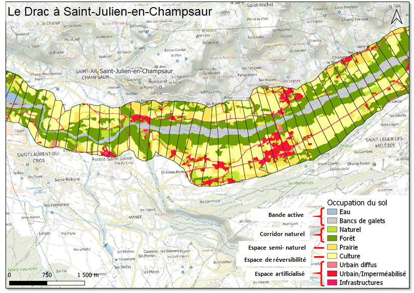
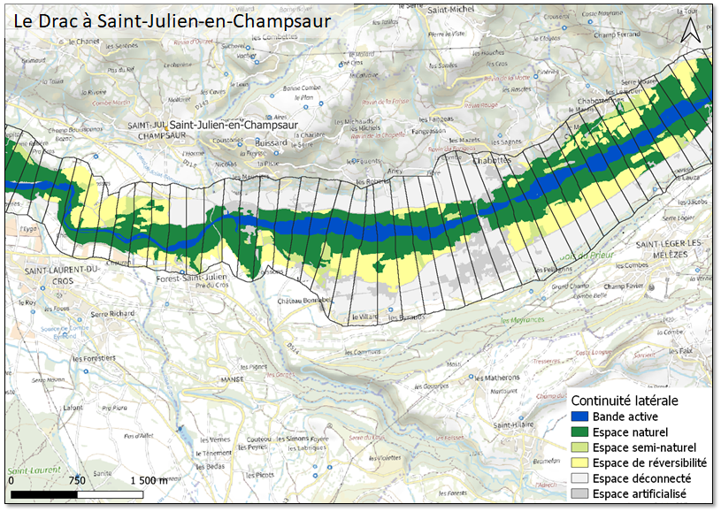
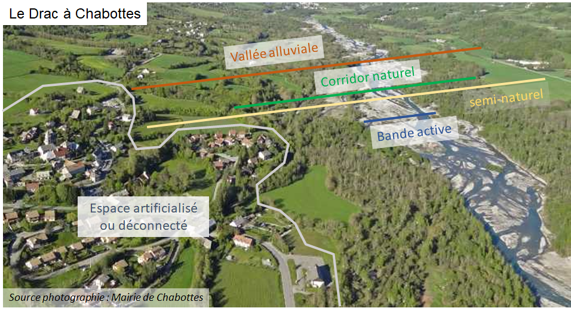

Méthodologie
Le projet Mapd’O a été développé en plusieurs étapes. Tout d’abord, le concept de l’application a été élaboré, avec la réalisation d’un audit auprès de potentiels futurs utilisateurs afin de mieux comprendre leurs besoins et les cas d’usage envisagés pour l’application. Ensuite, la phase de développement a suivi, incluant la création des jeux de données et, en parallèle, le développement de l’application web. Les sections suivantes fournissent plus d’informations sur ces différentes étapes.
Étude des besoins
Le fonctionnement physique des rivières à l’échelle du bassin versant fait régulièrement l’objet de diagnostics dans le cadre d’états des lieux des milieux aquatiques, souvent réalisés par les syndicats de bassin versant. Ces diagnostics sont effectués pour planifier stratégiquement les actions à mener en vue d’améliorer les milieux aquatiques. Ils sont ainsi utilisés dans des dispositifs réglementaires comme les contrats de milieu, les SAGE, ou d’autres outils de programmation spécifiques aux Agences de l’Eau. Les bureaux d’études interviennent régulièrement dans ce type d’évaluation.
L’application Mapd’O vise à caractériser le fonctionnement hydromorphologique des cours d’eau d’un bassin versant, notamment en lien avec la notion d’« espaces de bon fonctionnement ». Elle intègre également des indicateurs relatifs à la dynamique latérale des cours d’eau. De plus, l’application s’inscrit parmi les outils à grande échelle mis à disposition des gestionnaires pour initier un état des lieux ou commander une étude spécifique, tout en offrant une vision globale du fonctionnement hydromorphologique des cours d’eau et des enjeux territoriaux.
Afin de mieux cerner les besoins opérationnels des futurs usagers de l’application, un audit a été mené auprès de différents gestionnaires de cours d’eau et bureaux d’études, de janvier à mai 2023. Les syndicats de bassin versant, tels que les EPTB, ont été principalement ciblés par cet audit. Quelques bureaux d’études, ainsi que des services départementaux et les DREAL, ont également été consultés. Le choix des structures s’est appuyé d’une part sur le réseau du laboratoire EVS et de l’OFB, et d’autre part sur l’Association Nationale des Élus de Bassin Versant (ANEB), qui représente de nombreux EPTB.
L’audit a pris la forme d’entretiens visant à expliquer la démarche et les méthodes du projet, puis à discuter des données et fonctionnalités que l’application pourrait mettre à disposition des structures sur les bassins versants. Lors de ces entretiens, plusieurs constats et besoins exprimés ont été récurrents, permettant ainsi de dresser un premier cadre d’utilisation opérationnelle de l’application.
Enjeux exprimés
Plusieurs enjeux sont ressortis de ces entretiens :
Le risque d’inondation, notamment pour des cours d’eau rectifiés avec des temps de réponse courts aux évènements pluvieux et la problématique du manque d’espace d’expansion des crues des rivières en amont des espaces à plus fort enjeux.
L’abaissement de la nappe d’accompagnement par incision du lit, qui peut être problématique pour le placement des points de captage d’eau potable.
La dégradation des ouvrages d’art ou des ouvrages de protection contre les inondations par incision du lit.
La diminution des ressources en eau par une mauvaise connexion des nappes d’accompagnement aux cours d’eau.
Le colmatage du fond du lit et le transfert de polluants agricoles par érosion des sols.
Le manque d’habitats de reproduction des poissons (pour la pêche notamment).
La dégradation des eaux de baignade par manque d’autoépuration des cours d’eau en lien avec la diversification des faciès et les écoulements hyporhéiques au niveau des radiers.
Tous ces enjeux ne sont pas présents sur tous les territoires à l’exception du risque d’inondation. De même, leurs niveaux de sensibilité varient entre les bassins versants. La mise à disposition de jeux de données nationaux sur ces enjeux permettrait de les lier à la caractérisation hydromorphologique des cours d’eau et ainsi de faciliter l’argumentation de certaines actions. On peut citer par exemple les données inondation (TRI, Atlas des zones inondables, ouvrages de protection contre les inondations), les cartes de risque d’érodabilité des sols, les cartes des aquifères et des piézomètres, les localisations des carrières et des ouvrages d’art.
Synthèse des besoins
Les besoins exprimés correspondent principalement aux cours d’eau de tailles moyennes ou petites avec des enjeux parfois plus faibles que les grands cours d’eau aménagés où sont implantées les principales zones urbaines. Les petites ou moyennes rivières constituent la grande majorité du linéaire du réseau hydrographique et donc un investissement important lors des états des lieux. Les grands cours d’eau sont généralement mieux connus avec des campagnes de mesures précises et des caractérisations in situ à des échelles moindres mais à des résolutions plus fines que celles pouvant être atteintes à travers des outils de caractérisation à large échelle tels que Mapd’O. Un aspect important dans la caractérisation hydromorphologique des cours d’eau est la mise en relation de ces derniers avec les enjeux du territoire. Ces enjeux, liés à l’hydromorphologie des cours d’eau, permettent de proposer des actions sur des problématiques du territoire et pas uniquement sur les objectifs de bon état écologique. Des fonctionnalités ont également pu être proposées pour venir enrichir l’analyse et l’interprétation des résultats mis à disposition par l’application en permettant:
la comparaison spatiale historique, par exemple d’évaluer les évolutions de la végétation rivulaire à partir des cartes du XXème siècle ou comparer des métriques dans le temps pour un segment des rivière
d’effectuer une synthèse des métriques à partir de la sélection d’un tronçon ou d’un bassin versant
d’effectuer un profil en travers (sur le MNT détendancé).
Les structures comme les syndicats de bassin versant et les fédérations de pêches recouvrent des tailles variées et une diversité de compétences. Selon la taille des structures, elles ne disposent pas de spécialistes sur les différentes thématiques de gestion. Il faut donc que l’outil soit adapté à un utilisateur avec des connaissances dans le domaine de l’hydromorphologie mais pas un spécialiste.
Un avertissement a été plusieurs fois émis sur l’usage de l’outil. L’application doit proposer une approche par bassin versant et non servir de substitut à des études plus précises de caractérisation d’un tronçon de cours d’eau, en vue de la définition d’une action. L’utilisation devrait ainsi rester dans le champ de l’aide au diagnostic de bassin (plutôt que viser à un diagnostic direct) pour la détermination des types d’actions à envisager sur des tronçons de cours d’eau.
Production des données
Données de base
Les données de base utilisées pour produire les cartes sont un modèle numérique de terrain de l’ensemble de la France, le RGE ALTI à une résolution de 5 m, et la base de données topographiques BD TOPO, qui fournit une description vectorielle du territoire et de ses infrastructures.
| Donnée | Description | Source |
|---|---|---|
| RGE ALTI | Modèle Numérique de Terrain de l’IGN | RGE ALTI |
| BD TOPO® | Base de données des élements du territoire et de ses infrastructures du territoire français de l’IGN | BD TOPO |
| RPG | Base des données de référence des parcelles agricoles de l’IGN | RPG |
| BD Carthage® | Base de données spatial des milieux aquatiques superficiels de la France | BD Carthage |
Traitement des données
Fluvial Corridor Toolbox (FCT) est un outil d’analyse hydromorphique de rivière par des approches géomatiques développé depuis 2011. L’outil a été initialement réalisé sur ArcGIS, puis sur QGIS et en Python 3. La version QGIS est disponible sous forme de plugin depuis 2019 et compte environ 10 téléchargements par mois. La version Python, moins répandue car plus difficile à utiliser, est destinée à l’analyse de réseaux hydrographiques entiers plutôt que des tronçons de cours d’eau. C’est cette dernière qui est utilisée pour produire les données exploitées dans l’application Mapd’O. Elle permet d’extraire des largeurs, des pentes, l’occupation du sol, la continuité latérale des cours d’eau à partir de données librement accessibles comme la BD TOPO® et les MNT de l’IGN. Ces variables sont synthétisées par tronçon le long de l’axe du fond de vallée (DGO ou Digital Geographical Unit) d’une longueur aujourd’hui défini à 200 mètres.
Tout d’abord, en fusionnant la BD Carthage® avec les données DEM, les limites du réseau hydrographique sont gravées dans les données topographiques. A partir de là, la zone du fond de la vallée est dérivée, ainsi que les caractéristiques représentant le relief du sol, la pente et la terrasse. Le fond de la vallée représente l’espace dans lequel l’analyse suivante est entreprise avec les données de BD TOPO®. Le BD TOPO® est utilisé pour produire une carte d’occupation des sols et une carte de continuité latérale des cours d’eau afin de déterminer les différents compartiments de la vallée alluviale. L’espace est ensuite découpé en tronçon de 200m le long des cours d’eau.

La carte de continuité latérale est ensuite derivé a partir de la carte d’occupation des sols. Elle permet de déterminer les différents compartiments de la vallée alluviale connecté latéralement à la rivière.


Basée sur ces cartes, des métriques sont ensuite calculées pour chaque tronçon de 200m le long de l’axe du fond de vallée (DGO ou Digital Geographical Unit).
| Variable | Description | Unité |
|---|---|---|
measure |
Distance depuis l’éxutoire de l’axis | m |
strahler |
Ordre de Strahler | - |
talweg_elevation_min |
Élévation minimale du talweg | m |
active_channel_width |
Largeur du chenal actif | m |
natural_corridor_width |
Largeur du corridor naturel | m |
connected_corridor_width |
Largeur du corridor connecté | m |
valley_bottom_width |
Largeur du fond de vallée | m |
talweg_slope |
Pente du moyenne du talweg | % |
floodplain_slope |
Pente moyenne du fond de vallée | % |
water_channel |
Surface en eau définie par la BD TOPO® | m² |
gravel_bars |
Surface des eaux intermittentes / bancs sédimentaires de la BD TOPO® | m² |
natural_open |
Éspace de végétation ouverte | m² |
forest |
Éspace de végétation fermée | m² |
grassland |
Parcelle de prairie permanente définie dans le RPG® | m² |
crops |
Surface de cultures | m² |
diffuse_urban |
Zone d’habitation diffus proche de la zone d’habitation de la BD TOPO | m² |
dense_urban |
Zone continue de l’espace bâti dense ou artificialisée | m² |
infrastructures |
Surface des infrastructures | m² |
active_channel |
Surface du chenal actif : le surface en eau et bancs sédimentaires | m² |
riparian_corridor |
Surface du corridor riverain : le chenal actif avec la végétation rivulaire connectée | m² |
semi_natural |
SSurface du corridor riverain avec surfaces agricoles connectées. | m² |
reversible |
Espace non urbanisé déconnecté du corridor fluvial par des infrastructures ou du bâti | m² |
disconnected |
Zone bâti, dense ou peu dense, et les infrastructures de transport | m² |
built_environment |
Surface des zones bâties | m² |
water_channel_pc |
Surface en eau définie par la BD TOPO® | % du fond vallée |
gravel_bars_pc |
Surface des eaux intermittentes / bancs sédimentaires de la BD TOPO® | % du fond vallée |
natural_open_pc |
Éspace de végétation ouverte | % du fond vallée |
forest_pc |
Éspace de végétation fermée | % du fond vallée |
grassland_pc |
Parcelle de prairie permanente définie dans le RPG® | % du fond vallée |
crops_pc |
Zone de cultures | % du fond vallée |
diffuse_urban_pc |
Zone d’habitation diffus proche de la zone d’habitation de la BD TOPO | % du fond vallée |
dense_urban_pc |
Zone continue de l’espace bâti dense ou artificialisée | % du fond vallée |
infrastructures_pc |
Infrastructure routière et ferroviaire | % du fond vallée |
active_channel_pc |
Surface du chenal actif : le surface en eau et bancs sédimentaires | % du fond vallée |
riparian_corridor_pc |
Surface du corridor riverain : le chenal actif avec la végétation rivulaire connectée | % du fond vallée |
semi_natural_pc |
Surface du corridor riverain avec surfaces agricoles connectées. | % du fond vallée |
reversible_pc |
Espace non urbanisé déconnecté du corridor fluvial par des infrastructures ou du bâti | % du fond vallée |
disconnected_pc |
Zone bâti, dense ou peu dense, et les infrastructures de transport | % du fond vallée |
built_environment_pc |
Surface de zones bâti | % du fond vallée |
sum_area |
Surface totale | m² |
idx_confinement |
Indice de confinement : Ratio de la largeur de la bande active sur la largeur du fond de vallée. | - |
Stockage des données
Les ensembles des données produits sont stockés dans une base de données PostgreSQL et mis en place sur un geoserver. Les données sont structurées en tables et vues pour faciliter leur exploitation dans l’application Mapd’O.
Création de l’application
L’application Mapd’O est développée en R avec le package Shiny et le framework golem. La carte interactive est générée avec Leaflet. Les graphiques sont produits avec Plotly.